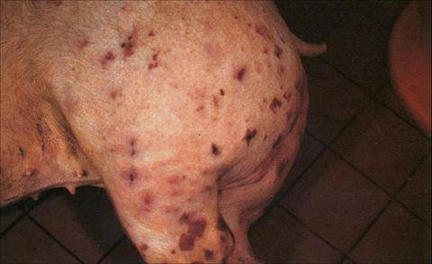
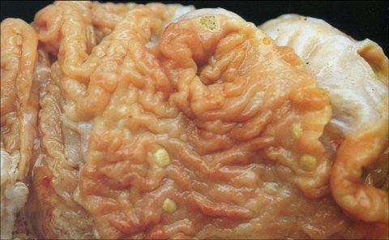
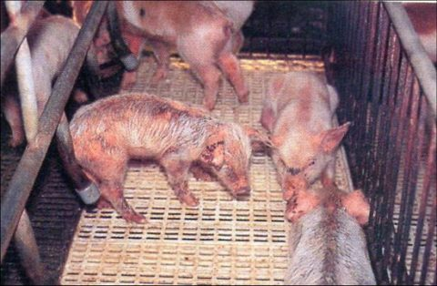
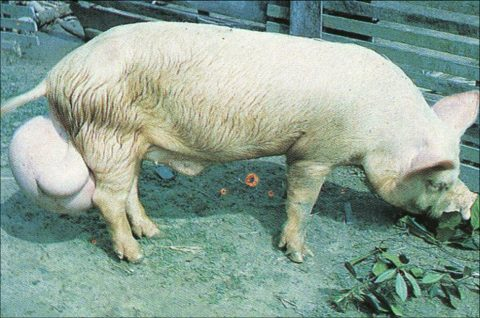
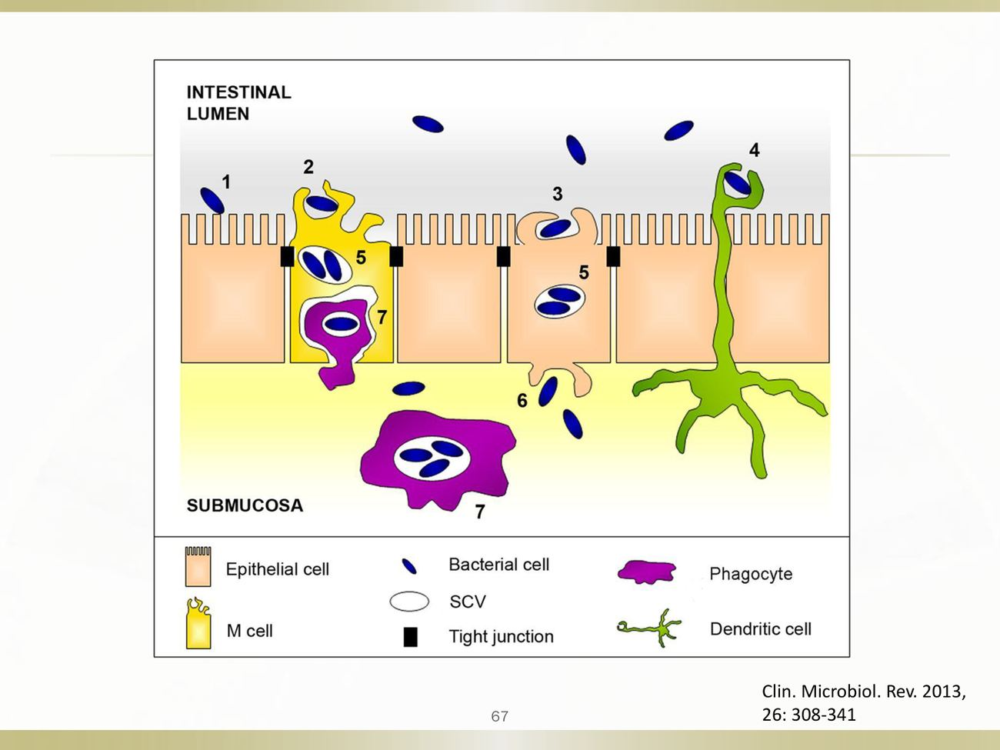

大方向與重點摘要
- 這章在講什麼
- 四個細菌病：豬丹毒（全身敗血＋皮膚菱形疹＋慢性關節炎）、豬沙門氏菌症（敗血型與腸炎型）、滲出性表皮炎（仔豬油脂樣皮膚病）、布氏桿菌症（生殖障礙）。其中三個是人畜共通（豬丹毒、沙門氏菌、布氏桿菌），只有滲出性表皮炎不是。
- 為什麼重要
- 豬丹毒造成生長肥育豬猝死與慢性跛行、屠宰廢棄；沙門氏菌除了豬病，更是重要的食因性疾病；布氏桿菌是重要人畜共通病與實驗室感染風險。講義附了 53 題國考題，出題密度很高。
- 這章要抓的重點
-
- 豬丹毒病原：Erysipelothrix rhusiopathiae，革蘭氏陽性、細長、無芽孢、不運動的桿菌；人畜共通（類丹毒、fish handler's disease）；火雞與豬帶菌率高。
- 豬丹毒臨床：急性高燒 40–42°C、皮膚紫紅色菱形突起斑疹（diamond skin）；慢性為增殖性、非化膿性關節炎與疣狀心內膜炎；腎皮質點狀出血；治療首選 penicillin。
- 沙門氏菌兩個血清型：Choleraesuis（豬適應型，敗血症，約 12–14 週齡）vs Typhimurium（宿主廣，腸結腸炎）；帶菌豬是最重要的感染源。
- 沙門氏菌病變：敗血型為耳翼四肢發紺（紅耳朵）、脾腫大、肝副傷寒小節；腸炎型為結腸鈕扣狀潰瘍、壞死性結腸盲腸炎。
- 滲出性表皮炎：Staphylococcus hyicus、剝落毒素（ExhA–D、ShetA/B）、7 日齡到 10 週齡、皮膚外傷為前置因子、不癢。
- 布氏桿菌症：Brucella suis；流產、不孕、睪丸炎、後軀麻痺與跛行；erythritol 使其偏好生殖組織；公豬比母豬難恢復；沒有可靠疫苗、不靠治療，靠檢測淘汰。
- 容易混淆
-
- 菱形疹是急性豬丹毒，不是慢性；慢性是關節炎與心內膜炎。
- 沙門氏菌好發在離乳後的保育豬，不是一週齡哺乳仔豬（那是 E. coli）。
- 滲出性表皮炎不癢、不是人畜共通、靠抗菌劑治療（不是驅蟲劑）。
- 布氏桿菌：公豬難恢復，母豬大多會恢復；「公豬較容易復原」是錯的。
四個病的主線必考
| 疾病 | 病原 | 好發 | 一句話特徵 | 代表圖 |
|---|---|---|---|---|
| 豬丹毒（Swine erysipelas, SE） | Erysipelothrix rhusiopathiae（G+ 桿菌） | 接近上市的生長肥育豬 | 高燒、皮膚菱形疹；慢性關節炎、心內膜炎 |  皮膚紫紅色菱形疹（p.18） |
| 豬沙門氏菌症（Swine salmonellosis） | Salmonella Choleraesuis／Typhimurium（G− 桿菌） | 集約飼養的離乳豬 | 敗血型：紅耳朵、脾腫、肝壞死點；腸炎型：鈕扣狀潰瘍 |  結腸鈕扣狀潰瘍（p.86） |
| 滲出性表皮炎（Exudative epidermitis；油脂豬病 greasy pig disease） | Staphylococcus hyicus（G+ 球菌） | 7 日齡–10 週齡 | 全身油脂樣滲出、結痂、不癢 |  皮毛糾結如蠟膜（p.130） |
| 布氏桿菌症（Brucellosis） | Brucella suis（G− 球桿菌） | 種豬 | 流產、不孕、睪丸炎、後軀麻痺跛行 |  公豬單側睪丸腫大（p.167） |
- E. rhusiopathiae → 急性敗血症、diamond skin、慢性關節炎／心內膜炎。
- Penicillin 是急性豬丹毒的經典第一線藥物。
- S. Choleraesuis → 全身性／敗血型沙門氏菌症。
- S. Typhimurium → 腸結腸炎。
- 帶菌豬是沙門氏菌流行病學與食品安全的核心。
- S. hyicus → 剝落毒素 → 油脂豬病。
- 滲出性表皮炎通常不癢。
- B. suis → 流產、不孕、睪丸炎。
- 布氏桿菌症是重要的人畜共通病與實驗室危害。
- 布氏桿菌症的控制靠根除與生物安全，而不是治療。
內容以老師講義為主，章節順序跟講義一致。標「補充」的是講義以外的延伸，標「推測」的是個人推論，考試以老師上課內容為準。國考題答案以講義上老師用紅框標出的選項為準。點任何「p.N」可在右側開啟講義對照。
豬丹毒：病因、公共衛生與流行病學 Etiology, Public Health & Epidemiology
豬丹毒（Swine erysipelas, SE）沒控制好時經濟損失大，可侵犯所有生產階段。最大損失來自生長肥育豬的猝死與急性敗血症；急性耐過後常留下慢性跛行與關節炎，造成生長差與屠宰廢棄。
病原必考
- 紅斑丹毒絲狀菌（Erysipelothrix rhusiopathiae）。
- 革蘭氏陽性、細長、無芽孢、不運動的桿菌；兼性厭氧；略彎，常形成長絲狀，有時呈多形性。
- 容易脫色，可能看起來像革蘭氏陰性（p.6）。
- 羊血瓊脂上：培養 24 小時為不溶血的小菌落；48 小時後可見溶血（p.7）。
國考常用「具有運動性」「是一種球菌」「屬於厭氧菌」「病原為巴氏桿菌／病毒／梭菌」來設陷阱，這些都錯。它是不運動的革蘭氏陽性桿菌，兼性厭氧。
公共衛生必考
- E. rhusiopathiae 是人畜共通病原。
- 大多經皮膚刮傷或刺傷感染，是職業病：屠夫、肉品加工、農民、家禽工作者、魚類處理者、獸醫師。
- 局部感染稱為類丹毒（erysipeloid）：急性、局部疼痛的蜂窩性組織炎，皮膚發紅。
- 別名：whale finger、fish handler's disease、pork finger。
流行病學必考
- 全世界都有，無所不在；可從許多家畜與野生動物的扁桃腺或消化道分離到。
- 帶菌率特別高的是豬與火雞。
- 豬群中靠帶菌豬散播：經糞便與口鼻分泌物排菌；帶菌豬是重要感染源。
- 富含有機質的土壤、被動物排泄物污染的地下水，促進動物間傳播。
- 作為蛋白質補充的魚粉，有時含有來自魚體黏液的 E. rhusiopathiae。
「廣布於土壤、水、腐敗的有機質、甚至魚類體表黏液，是一種人畜共通傳染病原；慢性感染常見增殖性、非化膿性關節炎」→ Erysipelothrix rhusiopathiae。
豬丹毒：致病機制、臨床、病變與防治 Pathogenesis, Clinical Signs, Lesions & Control
豬丹毒是「血管病」：急性期血管傷害造成皮膚菱形疹與腎點狀出血；慢性期血管炎延伸到關節與心瓣膜。
致病機制理解
- 通常吃進受污染的飼料與飲水，可能經扁桃腺或消化道其他淋巴組織進入；也可經皮膚傷口感染。
- 產生神經胺酸酶（neuraminidase），可能幫助穿透細胞，被認為與毒力有關，可能參與組織侵入與血管傷害。
- 血管傷害造成血栓、干擾微血管與小靜脈的微循環；莢膜可抵抗吞噬。
- 慢性關節炎：血管炎、纖維素滲到血管周圍與關節；滑液膜明顯絨毛狀增生，關節病變以增生為主而非滲出；可形成血管翳（pannus），最後破壞關節軟骨、關節黏連（ankylosis）。
- 瓣膜性心內膜炎比關節病變少見，被認為是菌栓造成心瓣膜內血管發炎。
- 表面蛋白：SpaA（surface protective antigen A）負責黏附；RspA、RspB 參與生物膜形成。
講義列出的毒力因子是 neuraminidase、莢膜、SpaA、RspA/B，沒有外毒素或腸毒素。所以國考「病原可分泌毒素」「可分泌腸毒素」的選項都不是答案。
臨床症狀必考
| 型 | 症狀 |
|---|---|
| 急性 | 多發生在接近上市體重的大豬；發燒 40–42°C；耳、鼻吻、頰、喉、腹部大片發紅或發紺；暴露後 2–3 天出現突起、紅到紫色、菱形或四方形的皮膚斑塊（diamond skin），白豬較明顯，黑豬只看得到毛略為隆起。關節疼痛不願站立，被迫站起會尖叫、很快又躺下；站立時四肢收在身體下方、頭低垂、背部弓起。食慾部分或完全喪失；上市體重的豬排便減少、糞便乾硬（像羊糞粒狀）。 |
| 亞急性 | 全身症狀較輕，有皮膚病變。 |
| 慢性 | 關節炎和／或瓣膜性心內膜炎；可能有慢性皮膚壞死。 |
菱形疹是急性期。國考 109 年「慢性豬丹毒的症狀皮膚可見紫紅色菱形或四角形突起斑疹」是錯的；期中考古（111 學年）「這個臨床症狀呈現於慢性期」也是錯的。另外講義寫急性主要侵犯接近上市的大豬，所以「好發於哺乳仔豬」是錯的。
病變必考
- 急性死亡的豬，剖檢時皮膚病變不一定看得到。
- 淋巴結鬱血，常明顯水腫。
- 腎皮質常有點狀與瘀斑出血。
- 慢性豬丹毒最主要的病變是增殖性、非化膿性關節炎，最常在跗、膝、肘、腕關節，偶有脊椎炎。
- 疣狀心內膜炎（vegetative endocarditis）可產生敗血性栓子，造成腎、脾等器官梗塞。
治療與控制必考
- 首選藥物：penicillin，越早開始越有效。慢性關節炎與瓣膜性心內膜炎對抗菌藥物反應差。
- 預防最好的方法是定期接種死菌苗（bacterin）或減毒疫苗。福馬林不活化、氫氧化鋁吸附的菌苗能保護生長豬到上市都不得急性病。
- 定期疫苗＋良好衛生＋淘汰疑似帶菌豬＋適當隔離檢疫，通常就能控制豬丹毒。
| 對象 | 講義的免疫計畫範例（p.35） |
|---|---|
| 經產母豬 | 每胎離乳後、配種前補強注射一次 |
| 更新種公豬及女豬 | 配種前 6 週完成一次免疫 |
| 種公豬 | 每半年補強注射一次 |
| 保育豬 | 6 週齡時注射一次 |
補充：penicillin 用於豬通常是肌肉注射（IM）；講義沒有列出劑量與途徑。國考 97 年「鏈黴素（streptomycin）是首選抗生素」是錯的。
肥育豬突然高燒、不吃、不願走、皮膚出現指壓會褪色的紫紅色菱形疹 → 急性豬丹毒，盡早給 penicillin。若是慢性跛行、關節腫大的豬，治療效果差，重點在疫苗與淘汰。處理病豬或屠體時注意自己手上的傷口（類丹毒）。
豬沙門氏菌症：病因、公共衛生與流行病學 Etiology, Public Health & Epidemiology
豬沙門氏菌症重要的原因有兩個：一是豬本身的臨床疾病；二是豬可帶多種血清型，污染豬肉、威脅人類健康。
病原必考
- Salmonella：革蘭氏陰性、兼性厭氧、不發酵乳糖的桿菌；兼性細胞內病原。
- 分成 S. enterica（主要病原）與 S. bongori（多見於冷血動物）兩個種。
- 依 White–Kauffmann–Le Minor 分類系統，已知 2,600 種以上血清型。寫法：Salmonella enterica serotype Typhimurium＝Salmonella Typhimurium（Typhimurium 是血清型，不斜體、首字大寫）。
| 血清型 | 宿主 | 備註 |
|---|---|---|
| Typhimurium | 豬、牛、家禽、人 | 宿主範圍廣，非傷寒型 |
| Enteritidis | 蛋、家禽、人 | 食物中毒 |
| Choleraesuis | 豬、人 | 豬的敗血症 |
| Dublin | 牛、人 | 人的全身性感染（國考：主要造成牛的敗血症） |
| Gallinarum／Pullorum | 家禽 | 雞傷寒／雛白痢 |
| Typhi | 人 | 傷寒 |
| Paratyphi A、B、C | 人 | 副傷寒 |
| 豬的兩個主要血清型 | 宿主 | 豬的主要疾病 |
|---|---|---|
| Typhimurium | 宿主範圍廣 | 腸結腸炎（enterocolitis） |
| Choleraesuis | 豬適應型 | 敗血症／全身性疾病 |
公共衛生必考
- 非傷寒型沙門氏菌症（nontyphoid salmonellosis, NTS）是許多國家食因性疾病的主因之一。
- 比污染食物少見，但直接接觸有症狀或無症狀感染的動物也可能感染人。
- Typhimurium、Heidelberg、Agona、Infantis 是豬常分離到、也在人類病例前 20 名的血清型。
- S. Choleraesuis 在亞洲部分地區是人類侵襲性沙門氏菌症的重要原因。
流行病學必考
- 帶菌豬（carrier pig）是最重要的感染源；混合感染與其他壓力會誘發臨床疾病。
- 豬持續帶一種或多種血清型很常見，但 Choleraesuis 與 Typhimurium 以外的血清型很少造成原發性臨床病。
- 外觀正常的豬可能帶多種對豬威脅小、但對人有風險的血清型。任何沙門氏菌血清型對人類而言都是病原菌！
- 豬肉中的沙門氏菌：離場的感染豬是屠宰場污染的原始來源；運輸與禁食的壓力增加不顯性帶菌豬的排菌，污染卡車與屠宰場環境。
- 大多數爆發發生在集約飼養的離乳豬。Choleraesuis 幾乎只從病豬分離到，通常表現為敗血症，嚴重感染多在 12–14 週齡；Typhimurium 造成腸結腸炎，下痢與脫水。
補充：國考考過「沙門氏菌症可藉由空氣傳播／節肢動物叮咬傳染／配種傳播」都是錯的；沙門氏菌主要是糞口傳播。
豬沙門氏菌症：致病、臨床、病變、診斷與預防 Pathogenesis, Lesions, Diagnosis & Prevention
記兩條線：Choleraesuis＝敗血型（全身器官出血、壞死、梗塞），Typhimurium＝腸炎型（壞死性潰瘍性結腸炎、鈕扣狀潰瘍）。
致病機制必考
- 黏附（adherence）。
- 致病島（pathogenicity island, PAI）：位於細菌染色體或質體上、與致病能力有關的一段基因群集。
- SPI-1：第三型分泌系統（type III secretion system）→ 侵入上皮細胞、細胞膜皺褶（membrane ruffling）。
- SPI-2：第三型分泌系統 → 細胞內存活與全身散播。
- 毒力質體：帶 spv 基因組，使感染能從腸道局部擴散成全身性敗血症。
- 耐酸與其他壓力反應機制，幫助通過胃腸道。

「將作用蛋白注入細胞、誘導細胞膜起皺紋（membrane ruffling）而進入細胞」→ Type III 分泌系統（國考 103 年、期中考古合卷）。
敗血型沙門氏菌症必考
- 臨床症狀：不吃、昏睡、發燒 40.5–41.6°C、不願移動、擠在欄角，甚至已死亡；四肢末端與腹部發紺。
- 病變：耳、腳、尾與腹部皮膚發紺；脾腫大，肝腫大較不嚴重；胃肝與腸繫膜淋巴結濕潤腫大；肺質地堅實有彈性、瀰漫性鬱血，常有小葉間水腫與出血；肝臟隨機分布的粟粒狀白色壞死灶。
腸炎型沙門氏菌症必考
- 臨床症狀：黃色水樣下痢，初期不帶血或黏液；發燒、採食下降、脫水；死亡率通常低。
- 病變：局部或瀰漫性壞死性腸炎、結腸炎或盲腸炎（typhlitis）。
剖檢病變整理（講義 p.70）必考
| 敗血型（豬主要死於敗血症） | 腸炎型（豬主要死於長期下痢） |
|---|---|
|
|
| 怎麼察覺豬場發生沙門氏菌症（p.71） | 敗血型 | 腸炎型 |
|---|---|---|
| 豬群行為 | 豬群交疊、沉鬱、死亡率提升 | |
| 外觀與臨床 | 急速死亡、發紺、全身皮膚出血斑點 | 6 週齡左右開始長期反覆性下痢 |
| 肉眼病變 | 全身臟器出血點、壞死點、梗塞，肝脾腫脹 | 壞死性、潰瘍性腸炎 |
副傷寒小節（paratyphoid nodule）是肝臟的小壞死灶伴隨發炎細胞聚集，是沙門氏菌症的經典病變（p.84）。考題的「肝臟有粟粒狀大小的黃白色壞死點」指的就是它。
第 2 週古典豬瘟也講過鈕扣狀潰瘍（迴盲瓣）。本講義沙門氏菌的鈕扣狀潰瘍在結腸。國考 115 年題幹：「保育舍仔豬突發性下痢、消瘦脫水，盲腸及結腸鈕扣樣潰瘍」→ 沙門氏菌症。
診斷必考
- 細菌分離：HE agar（黑色中心菌落）、SMID agar、MacConkey agar（不發酵乳糖 → 無色菌落）。
- PCR。
- 免疫分析（immunoassay）。
「主要呈現敗血症、MacConkey agar 上呈現無色菌落」→ S. Choleraesuis（國考 102、110 年）。E. coli 發酵乳糖，在 MacConkey 上是粉紅色，所以「兩種血清型在 MacConkey 上都呈粉紅色」是錯的。
讀書補充Note - 沙門氏菌考題：怎麼判斷是敗血型還是腸炎型？
先講結論
會考，而且就是用「給一串臨床和病變線索，要你判斷敗血型或腸炎型，再對應血清型」的方式考。敗血型對應 S. Choleraesuis，腸炎型對應 S. Typhimurium。判斷線索來自講義與題庫；「解題步驟」是補充。
1. 以 110 年國考那題為例（全身塊狀紫斑、脾腫、肝腫、肝粟粒狀壞死白點、革蘭氏陰性桿菌、MacConkey 無色）
- 全身皮膚塊狀紫斑、出血點：敗血型的發紺與出血。
- 脾臟腫大、肝臟腫大：敗血型的內臟病變。
- 肝臟散發性粟粒狀壞死白點：副傷寒小節，敗血型經典病變。
- 革蘭氏陰性桿菌、MacConkey 無色：確定是沙門氏菌（不發酵乳糖）。
- 重點：題幹沒有腸道病變、下痢，所以不是腸炎型，答案 S. Choleraesuis。
2. 敗血型 vs 腸炎型的線索對照
- 敗血型（Choleraesuis）：約 12–14 週齡；耳翼、四肢末端、腹部發紺（紅耳朵）、皮膚出血斑；脾腫大、肝粟粒狀壞死（副傷寒小節）、肺堅實水腫出血；死於敗血症、肺炎。
- 腸炎型（Typhimurium）：離乳後約 6 週齡起反覆下痢；黃色水樣下痢、脫水消瘦；壞死性結腸盲腸炎、結腸鈕扣狀潰瘍；死於長期下痢。
3. 題庫裡考過的題目
- 腸炎型：
- 98 年第二次：亞急性及慢性沙門氏菌症在結腸產生潰瘍。
- 111 年第二次：保育期仔豬頑固性下痢、壞死性腸炎與潰瘍 → 沙門氏菌感染症。
- 115 年第二次：保育舍仔豬突發下痢、盲腸結腸鈕扣樣潰瘍 → 沙門氏菌症（該份試卷官方答案缺，依知識判斷）。
- 敗血型：
- 102 年第二次：主要呈現敗血症、MacConkey 無色 → Choleraesuis。
- 112 年第二次：耳翼及四肢末端發紺的敗血症 → Choleraesuis。
- 99 年第二次：最易引起豬肺炎的是 Choleraesuis。
- 兩型病變混在同一題：109 年第一次，耳翼四肢發紺、脾腫大、淋巴結壞死、結腸鈕扣狀潰瘍、肝黃白色點狀壞死同時出現，選項是四種不同的菌，答案是 S. Choleraesuis（只要認出沙門氏菌）。講義 p.70：敗血型的耐過豬以壞死性結腸炎為主，所以「有鈕扣狀潰瘍」不代表一定是腸炎型。
4. 解題步驟（補充）
- 先抓關鍵線索：只有下痢、鈕扣狀潰瘍而沒有敗血徵象，偏腸炎型；發紺、脾腫大、肝壞死點偏敗血型。只要有敗血型徵象，即使同時有結腸鈕扣狀潰瘍，仍選 Choleraesuis：講義 p.70 寫敗血型的耐過豬以壞死性結腸炎為主。
- 兩型都有時，看選項有沒有血清型：Choleraesuis 偏全身性；Typhimurium 偏腸炎。
- 若只問「沙門氏菌症」整體，就看病變類型，不要自己加血清型。
- 若選項是不同菌屬（例如 Salmonella、Bordetella、Klebsiella、Pasteurella），只要認出是沙門氏菌就好，不用在敗血型和腸炎型之間二選一（109 年國考即是如此）。
5. 要背到什麼程度
- 一定要會：發紺＋脾腫＋肝壞死點＝敗血型 Choleraesuis；只有下痢＋鈕扣狀潰瘍、沒有敗血徵象＝腸炎型（多為 Typhimurium）；兩者並存時仍選 Choleraesuis（敗血型耐過豬可有結腸炎，講義 p.70）。
- 懂就好：兩型可能並存，病變混在一起。
- 不用背：其他血清型。
預防必考
- 要把沙門氏菌從豬群完全排除很困難。控制重點是減少暴露、降低壓力與排菌、改善衛生與生物安全，適當時接種疫苗。
- 對細胞內的沙門氏菌，死菌苗的保護通常比減毒活菌苗弱；部分減毒活菌苗已證實有保護效果（商品例：Enterisol Salmonella T/C、Salmoporc）。
國考 96 年「尚無疫苗可供預防」是錯的。
滲出性表皮炎（油脂豬病）Exudative Epidermitis / Greasy Pig Disease
滲出性表皮炎（Exudative epidermitis），又稱油脂豬病（greasy pig disease），全球都有，是豬最常見的葡萄球菌皮膚病。發生於 7 日齡到 10 週齡（哺乳與剛離乳仔豬），病灶處累積油脂樣滲出物，全身不癢的滲出性皮膚炎－表皮炎。
病原與公衛必考
- 豬葡萄球菌（Staphylococcus hyicus）：革蘭氏陽性球菌，是成豬皮膚的正常菌叢，也可從豬舍環境分離。
- 羊血瓊脂上形成 3–4 mm、瓷白色、不溶血的菌落。
- 主要是動物病原，不被視為重要的人畜共通病原。
流行病學必考
- 由母豬或女豬帶在皮膚或陰道。
- 腳與腿的擦傷或身體割傷先於感染（皮膚外傷是前置因子）；傷口多由打架或粗糙表面（例如新的水泥地）造成。
- 可能一兩頭仔豬發病，偶爾整窩。
- S. hyicus 對不利環境很有抵抗力，可在環境中長期存在。
致病機制必考
- 毒力與表皮剝落毒素（exfoliative toxins）的產生密切相關。
- 毒素使表皮細胞分離，讓細菌在表皮內快速擴散；表皮剝落伴隨過量皮脂分泌與漿液性滲出。
- 這些毒素類似人類葡萄球菌燙傷樣皮膚症候群（staphylococcal scalded skin syndrome, SSSS）的 S. aureus 毒素。
- 已鑑定的剝落毒素：丹麥的 ExhA、ExhB、ExhC、ExhD；日本的 ShetA、ShetB。
臨床症狀必考
- 仔豬通常在 4–6 日齡到 5–6 週齡發病。
- 開始時無精打采、沉鬱、厭食，皮膚發紅或呈銅色。
- 薄的淡褐色滲出物鱗屑先出現在腋下與鼠蹊部，3–5 天內擴散全身，迅速變深、質地油膩。
- 皮膚摸起來熱、毛被糾結，滲出物可延伸到睫毛；口腔可能潰瘍；蹄踵可能角質分離。
- 發病率與死亡率通常都高，越小的豬越嚴重。
病變理解
- 早期：皮膚發紅、有清澈滲出物。之後脫水、有臭味；痂皮常龜裂，裂縫裡夾雜環境的髒污。除有毛部位外，腳、口、舌也可見病變。
- 表皮早期變化：剝落、胞吐（exocytosis）、結痂、形成表皮內水泡性及膿泡性皮炎。
- 後期：棘層肥厚（acanthosis），真皮血管周圍發炎。
治療與預防必考
- 早期抗菌藥物治療最有效，最好依藥物敏感性試驗選藥。
- 支持療法與局部消毒有助恢復；反覆發生的豬場可考慮自家疫苗。
- 減少皮膚破損：剪犬齒（needle teeth）、去除粗糙表面。
- 每次分娩之間徹底清潔消毒；母豬進分娩舍前要清洗消毒。
- 控制重點在預防外傷、改善環境：通風、乾淨乾燥的欄舍、控制濕度、降低飼養密度。
- 不癢：「有劇癢症狀」一律錯（100、108、109 年；期中考古）。
- 不是人畜共通；不是病毒、黴菌或寄生蟲病；用抗菌劑治療，ivermectin 無效。
- 發生在仔豬，不是母豬（111 年）；病原是常在菌（104 年「病原不屬於常在菌」錯）。
- 毒素是 ExhA 與 ExhB（105 年）；ShetC/D、PmtA/B、Stx2e/Stx2d 都不是。
- 又稱油脂豬病，不是 Glässer disease。
布氏桿菌症 Brucellosis
豬布氏桿菌症在有感染家豬或野豬的地區持續存在，野豬是重要保毒宿主。美國商業豬群已幾乎根除；南美廣泛、歐洲低盛行；亞洲（特別是東南亞）盛行率普遍高，華南與新加坡以 biovar 3 為主，其他地區以 biovar 1 為主。
病原與公衛必考
- Brucella：革蘭氏陰性小桿菌或球桿菌，不運動，單獨排列；長得慢，形成針尖大小、半透明、表面光滑的菌落。
- Brucella suis 是豬布氏桿菌症與生殖疾病的主要病原。
- Brucella 是重要的實驗室感染風險。
| 種 | 偏好宿主 | 對人的重要性 |
|---|---|---|
| B. melitensis | 綿羊、山羊 | 高 |
| B. abortus | 牛 | 中 |
| B. suis | 豬 | 中 |
| B. canis | 犬 | 輕 |
| B. ceti／B. pinnipedialis | 鯨豚／海豹 | 輕 |
| B. ovis | 綿羊 | 未有報告 |
| B. neotomae／B. microti | 沙漠林鼠／田鼠 | 未有報告 |
- 感染人類的主要是 B. melitensis，其次 B. abortus 與 B. suis。
- 過去大多數人類布氏桿菌症的來源是 B. suis 感染的豬。B. suis biovar 1 與 3 對人的致病性比 B. abortus 高很多。
- 人類感染 B. suis 幾乎都是職業性：農民、獸醫師、屠宰場工作人員、獵人等。
補充：國考 101 年「何者不是布氏桿菌病之病原」答案 Brucella fetus，這個名稱不存在（流產病原 Campylobacter fetus 才有 fetus）。
流行病學必考
- 大多數 B. suis 經直接接觸感染豬傳播：
- 消化道：吃到被感染豬排出物污染的飼料或飲水。
- 配種：母豬與感染公豬交配，或用含 B. suis 的精液人工授精。
- 在冰點或接近冰點的有機物中可存活；要從豬場根除必須包含有效的衛生計畫。
- 野豬的重要性取決於野豬與家豬接觸的程度。
- 感染 biovar 1、2、3 的豬可傳染其他家畜；B. suis 可自然感染馬、牛、犬。
致病機制必考
| 步驟 | 機制 |
|---|---|
| 進入宿主 | 尿素酶（urease）可能把尿素分解成 CO₂（與氨），緩衝胃的低 pH |
| 在全身部位持續存在 | 低內毒性的 LPS與多種機制，逃避先天免疫辨識與補體殺菌 |
| 細胞內存活 | 液泡內的酸性環境誘導 VirB 第四型分泌系統，是在巨噬細胞或樹突細胞內複製的關鍵毒力因子 |
| 生殖組織偏好 | 赤藻糖醇（erythritol，古柯二醇）等宿主因子利於 Brucella 在生殖組織生長；乳腺、子宮、胎盤、副睪富含 erythritol |
讀書補充Note - 四個病的毒力因子怎麼背？會怎麼考？
先講結論
每個病只記一個「招牌」毒力因子，其他當細節。四個病的因子類型不同：滲出性表皮炎有真正的毒素；豬丹毒、沙門氏菌、布氏桿菌沒有典型外毒素，靠侵入、躲避、細胞內存活。講義列了這些因子；下面的記法口訣是補充。
1. 每個病的招牌因子與記法
- 豬丹毒：neuraminidase（可能幫助穿透細胞，與毒力有關）、莢膜（抗吞噬）、SpaA（黏附）。記法：沒有外毒素；neuraminidase＝穿透，莢膜＝躲吞噬，SpaA＝黏。
- 沙門氏菌：SPI-1、SPI-2（第三型分泌系統 T3SS）、spv 質體。SPI-1 把蛋白注進細胞、誘導細胞膜起皺而侵入；SPI-2 負責細胞內存活與全身散播；spv 讓感染從腸道局部變成全身敗血症。記法：「1 進、2 活」，spv＝敗血症。
- 滲出性表皮炎：ExhA、ExhB（另有 ExhC、D；日本命名 ShetA／B）。表皮剝落毒素，使表皮細胞分離，讓細菌在表皮內擴散。記法：Exh＝Exfoliative hyicus（補充）。
- 布氏桿菌：urease、低內毒性 LPS、VirB 第四型分泌系統、erythritol。urease 緩衝胃酸；LPS 內毒性低，逃避免疫；VirB 在細胞液泡內複製；erythritol 讓它偏好生殖組織。記法：「進、躲、活、愛生殖」。
2. 這類題目通常怎麼考
幾乎都是「把 A 病的因子放到 B 病」，或把對的描述改成錯的（只列有證據的）：
- 豬丹毒：有沒有外毒素（102、106 年國考）：「病原會分泌毒素」「可分泌腸毒素」都是錯的。
- 沙門氏菌：第三型分泌系統（103 年國考、期中考古合卷）：「將作用蛋白注入細胞、誘導細胞膜起皺而進入細胞」答案是 Type III。
- 滲出性表皮炎：哪個毒素（105 年國考）：選項放 ShetC／D、PmtA／B、Stx2e／Stx2d，答案只有 ExhA 與 ExhB；Pmt 是 P. multocida 的毒素，Stx2e 是水腫病的。
- 布氏桿菌：機轉細節：
- 期中考古 106：「細胞空泡內的鹼性環境誘導 VirB」是錯的，講義寫酸性。
- 期中考古 111：「人類的胎盤、乳腺、副睪含高濃度 erythritol」是錯的，講義寫動物組織。
- 國考 103 年：胎盤、乳腺、副睪含 erythritol，有利於 Brucella 繁殖。
3. 要背到什麼程度
- 一定要會（國考與期中考古出過）
- ExhA、ExhB 是滲出性表皮炎的毒素。
- 沙門氏菌的第三型分泌系統（SPI-1 侵入、膜起皺）。
- 布氏桿菌：VirB 在酸性液泡誘導；erythritol 在動物生殖組織；urease。
- 豬丹毒、沙門氏菌、布氏桿菌都沒有典型外毒素。
- 懂就好
- neuraminidase、莢膜、SpaA 的功能；spv 質體使感染變全身。
- 不用背
- ExhC、ExhD、ShetA／B 的差別；RspA、RspB（生物膜相關）。
4. 記憶小技巧（補充）
- 看到「毒素」兩個字先停一下：這章只有滲出性表皮炎真的有毒素。
- 「把 A 病放到 B 病」的排除法：看到毒素名先問它屬於哪個病，不屬於就排除（Stx2e＝水腫病、Pmt＝萎縮性鼻炎）。
- 酸鹼、人／動物這類「一字之差」：期中考古愛改，記原文，不要自己推。
注意：期中考古（106 學年）選項寫「細胞空泡內的鹼性環境可誘導 VirB」是錯的，講義寫的是酸性。期中考古（111 學年）選項「人類的胎盤、乳腺、副睪含高濃度 erythritol，人感染 B. suis 容易流產」是錯的：講義寫的是動物組織富含 erythritol。
臨床症狀必考
- 典型表現：流產、不孕、睪丸炎（orchitis）、後軀麻痺與跛行。
- 生殖道感染在公豬比母豬持久：公豬一旦生殖道感染很少恢復；副性腺感染會在精液中散播大量 B. suis。
- 公豬副性腺或睪丸的病變通常比子宮更廣泛、不可逆；可能不孕、缺乏性慾，常與睪丸受侵犯有關。
- 配種時經生殖道暴露的母豬或女豬流產率最高。
- 大多數母豬最後會從生殖道感染恢復。
國考 107 年、期中考古 106 學年都考：「公豬的臨床症狀通常較母豬容易復原」是錯的。反過來「母豬較公豬容易復原」是對的。
病變必考
- 子宮：子宮腺充滿白血球、子宮內膜基質細胞浸潤、腺周結締組織增生。
- 胎盤：瀰漫性化膿性炎症 → 化膿性壞死性胎盤炎伴纖維素性多發性漿膜炎。
- 肝臟常見局部顯微肉芽腫病灶。
- 骨骼：病變多在骺軟骨附近，中心乾酪化，外圍巨噬細胞與白血球，最外層常有纖維結締組織。
診斷、治療與控制必考
- 血清學常用於豬群篩檢。
- 培養可確定鑑定，但有很大的生物安全風險。
- 尚未有安全可靠、能產生有效免疫的豬用疫苗。
- 受感染商業豬群的控制主要靠檢測、淘汰感染動物、嚴格生物安全，部分根除計畫會全場清場。
- 抗菌藥物治療一般不建議作為根除策略：Brucella 可在細胞內持續存在、治療後復發；治療無法可靠消除感染或人畜共通風險。
鑑別比較 Differential Comparison
把四個病放在一起比，最常考的是「革蘭氏染色」「人畜共通」「有沒有疫苗」「皮膚長什麼樣」。
四病比較必考
| 豬丹毒 | 沙門氏菌症 | 滲出性表皮炎 | 布氏桿菌症 | |
|---|---|---|---|---|
| 病原 | E. rhusiopathiae | S. Choleraesuis／Typhimurium | S. hyicus | B. suis |
| 革蘭氏 | 陽性桿菌（易脫色） | 陰性桿菌 | 陽性球菌 | 陰性球桿菌 |
| 人畜共通 | 是（類丹毒） | 是（食因性） | 否 | 是（職業、實驗室） |
| 主要對象 | 生長肥育豬 | 離乳保育豬（敗血型 12–14 週） | 7 日齡–10 週齡 | 種豬 |
| 皮膚 | 紫紅色菱形突起疹（急性） | 耳翼、四肢末端發紺（敗血型） | 全身油脂樣滲出、結痂、不癢 | — |
| 代表病變 | 腎皮質點狀出血；慢性關節炎、疣狀心內膜炎 | 脾腫、肝副傷寒小節；結腸鈕扣狀潰瘍 | 表皮內水泡膿泡、棘層肥厚 | 睪丸炎、化膿性壞死性胎盤炎、肝肉芽腫、脊椎炎 |
| 關鍵毒力因子 | neuraminidase、莢膜、SpaA | SPI-1／SPI-2 T3SS、spv 質體 | 剝落毒素 ExhA–D、ShetA/B | urease、低內毒性 LPS、VirB T4SS、erythritol |
| 治療 | penicillin（急性） | — | 早期抗菌藥、局部消毒 | 不建議（檢測淘汰） |
| 疫苗 | 有（死菌苗、減毒苗） | 有（活菌苗效果較好） | 自家疫苗（反覆發生時） | 沒有可靠疫苗 |
兩種沙門氏菌血清型必考
| S. Choleraesuis | S. Typhimurium | |
|---|---|---|
| 宿主 | 豬適應型（幾乎只從病豬分離） | 宿主範圍廣（國考：感染動物種類比較多） |
| 疾病 | 敗血症（紅耳朵），也最易引起肺炎 | 腸結腸炎（黃色水樣下痢） |
| 好發 | 約 12–14 週齡 | 離乳後、約 6 週齡起反覆下痢 |
| 代表病變 | 脾腫大、肝副傷寒小節、肺水腫出血、全身淋巴結壞死 | 壞死性結腸盲腸炎、鈕扣狀潰瘍 |
補充：國考 102 年選項「Choleraesuis 在腸道黏膜造成的傷害比較嚴重」錯，腸道傷害以 Typhimurium 為主；「主要症狀以肺炎為主」是 Choleraesuis 而非 Typhimurium（99 年國考：最易引起豬肺炎的是 Choleraesuis）。
講義所附歷屆國考題 National Exam Questions
講義每個疾病後面附了歷屆國考題，答案是講義上老師用紅框標出的選項。先自己作答，再點「顯示答案」看逐選項詳解。標「補充」的是講義沒寫、為了解釋選項而延伸的內容。
豬丹毒（19 題）必考
(B) 對（老師紅框）：（補充）此菌耐鹽、耐醃燻，可在加工肉品中存活數月，這也是肉品處理者感染的原因之一；講義本文未寫。
(A) 錯：講義沒有列腸毒素。
(C) 錯：宿主廣，人也會感染。
(D) 錯：penicillin 有效。
(A) 對。
(B) 錯：鼻吻變形。
(C) 錯：耳翼四肢發紺。
(D) 錯：油脂樣滲出結痂。
(C) 對。
(A) 錯。
(B) 錯：兼性厭氧。
(D) 錯：講義未列外毒素。
(A) 對。
(C) 錯：Glässer 病。
(D) 錯：豬鏈球菌症。
(D) 對。
(A) 錯：PRRS 是耳朵發紺（藍耳病）。
(B) 錯：發紺。
(C) 錯：神經症狀。
(D) 錯，所以選它：首選是 penicillin。
(A)(B)(C) 對。
沙門氏菌症（21 題）必考
(C) 對：保育豬＋盲腸結腸鈕扣狀潰瘍（p.86）。
(A) 錯：仔豬球蟲在小腸，多在哺乳期（補充）。
(B) 錯：PED 是小腸絨毛萎縮的水樣下痢（第 5 週）。
(D) 錯：豬赤痢是大腸黏液血便、黏膜壞死，不是鈕扣狀潰瘍（補充）。
(B) 對：敗血型＋副傷寒小節＋不發酵乳糖。
(A) 錯：E. coli 發酵乳糖，MacConkey 上粉紅色。
(C) 錯：萎縮性鼻炎。
(D) 錯：生殖障礙。
(C) 對：黃色水樣下痢＋結腸壞死性潰瘍性病變＝腸炎型（p.69）。
(A) 錯：多發性漿膜炎。
(B) 錯：增殖性腸病，迴腸黏膜增厚（補充）。
(D) 錯：E. coli 不造成結腸壞死潰瘍。
(D) 錯，所以選它：配種傳播是布氏桿菌。
(A)(B)(C) 對。
(D) 對。
(A) 錯。
(B) 錯：那是 E. coli；沙門氏菌多在離乳豬。
(C) 錯：Pullorum 是家禽。
(B) 對。
(A) 錯：革蘭氏陽性，不在 MacConkey 上生長（補充）。
(C) 錯：粉紅色菌落。
(D) 錯：不以敗血症為主。
(C) 對。
(A) 錯：腸道病變以 Typhimurium 為主。
(B) 錯：Typhimurium 是腸結腸炎。
(D) 錯：不發酵乳糖，無色。
(D) 對：糞口傳播。
(A)(C) 錯：呼吸道病，飛沫傳播。
(B) 錯：口蹄疫可經氣膠傳播（第 4 週）。
(C) 對：結腸鈕扣狀潰瘍。
(B) 對。
(A)(C)(D) 錯。
滲出性表皮炎（11 題）必考
(D) 對。
(A) 錯：成豬皮膚常在菌。
(B) 錯。
(C) 錯：驅蟲劑，不是抗菌藥。
(D) 對。
(D) 錯，所以選它。
(A)(B)(C) 對。
(A) 對。
(D) 對。
(C) 對。
(A) 錯：S. aureus 的剝落毒素造成人類 SSSS，但豬的病原是 S. hyicus。
布氏桿菌症（5 題）必考
(A) 不是，所以選它：沒有 Brucella fetus 這個種（補充：易與 Campylobacter fetus 混淆）。
期中考古題 Past Midterm Questions
你提供的期中考古中，屬於本講義範圍的題目。答案來源：106 學年為老師紅字、111 學年為考卷上的批改記號、合卷為考卷旁手寫答案。
考古題照片為手機翻拍，題目文字依可辨識內容整理。附圖題註明對應的講義圖頁。
106 學年期中考必考
(C) 對。
(A)(B)(D) 錯：非人畜共通、驅蟲劑無效、不癢。
(B) 對。
(A) 錯：革蘭氏陽性，皮膚是菱形疹。
(D) 錯：粉紅色菌落。
(C) 錯，所以選它。
(A)(B)(D) 對。
(B) 對：副傷寒小節。
(A)(C)(D) 錯。
111 學年期中考（2022）必考
(A) 對。
(B) 錯，所以選它：菱形疹是急性期。
(A)(C)(D) 對。
(B) 對。
(C) 錯：鉤端螺旋體造成生殖障礙（之後的講義）。
(D) 錯：菱形疹。
合卷（Part B 葉光勝老師部分）必考
(B) 對。
(B) 對。
考試方向（推測）
以下是依講義強調的內容與考古題推測的出題方向，考試範圍以老師上課為準。
| 可能考法 | 答題重點 |
|---|---|
| 豬丹毒病原特性 | G+、細長、無芽孢、不運動、兼性厭氧、易脫色；豬與火雞帶菌；魚粉；人畜共通（類丹毒、fish handler's disease） |
| 豬丹毒急性 vs 慢性 | 急性：40–42°C、菱形疹、腎皮質點狀出血、猝死；慢性：增殖性非化膿性關節炎、疣狀心內膜炎、梗塞 |
| 豬丹毒治療與免疫 | penicillin；死菌苗／減毒苗；母豬每胎配種前、種公豬每半年、保育豬 6 週齡 |
| 兩種沙門氏菌血清型 | Choleraesuis 豬適應、敗血、12–14 週；Typhimurium 宿主廣、腸結腸炎 |
| 沙門氏菌致病機制（問答） | 黏附 → SPI-1 T3SS 侵入（membrane ruffling）→ SPI-2 T3SS 細胞內存活 → spv 質體全身散播；耐酸 |
| 沙門氏菌病變 | 敗血型：發紺、脾腫、肝副傷寒小節、肺水腫；腸炎型：鈕扣狀潰瘍、壞死性結腸盲腸炎 |
| 沙門氏菌鑑定 | G−、不發酵乳糖（MacConkey 無色）、White–Kauffmann–Le Minor |
| 滲出性表皮炎 | S. hyicus、ExhA–D／ShetA–B、類似 SSSS、外傷前置、不癢、非人畜共通、抗菌劑 |
| 布氏桿菌致病 | urease、低內毒性 LPS、VirB T4SS（酸性液泡）、erythritol |
| 布氏桿菌臨床與控制 | 流產、不孕、睪丸炎、後軀麻痺；公豬難恢復；無疫苗、不治療、檢測淘汰 |
學習重點整理
練習題 Practice Quiz
先自己作答再點開答案。最後 3 題是臨床情境題。
Choleraesuis 豬適應、敗血；Typhimurium 宿主廣、腸結腸炎；兩者都不發酵乳糖。
滲出性表皮炎通常不癢（nonpruritic），是細菌病，用抗菌藥物；ivermectin 是驅蟲劑。
敗血型（Choleraesuis）：40.5–41.6°C、不願動、群聚、耳翼與四肢末端發紺（紅耳朵）、急速死亡；脾腫大與梗塞、全身淋巴結壞死出血、肺鬱血與小葉間水腫出血、肝腫大與多發壞死點（副傷寒小節）、腎點狀出血、胃黏膜出血性潰瘍。腸炎型（Typhimurium）：約 6 週齡起黃色水樣下痢（初期不帶血）、脫水、死亡率低；壞死性結腸炎與盲腸炎、鈕扣狀潰瘍、中後段腸繫膜淋巴結極度腫大壞死。
(1) 急性豬丹毒（Erysipelothrix rhusiopathiae）：接近上市體重、高燒、關節痛、菱形疹、腎皮質點狀出血。
(2) 盡早給 penicillin（補充：一般為 IM 注射）；早期治療最有效。
(3) 定期疫苗（母豬每胎配種前、種公豬每半年、保育豬 6 週齡）、改善衛生、淘汰疑似帶菌豬、隔離檢疫；檢查飼料中的魚粉來源。
(4) 人畜共通：手上的刮傷或刺傷可能造成類丹毒（局部紫紅色、疼痛的蜂窩性組織炎），應戴手套。
(1) 12 週齡那批：敗血型沙門氏菌症（S. Choleraesuis），肝壞死點即副傷寒小節。6 週齡那批：腸炎型沙門氏菌症（S. Typhimurium），剖檢預期結腸壞死性潰瘍、鈕扣狀潰瘍。
(2) 細菌分離：HE agar、SMID agar、MacConkey（不發酵乳糖、無色菌落），再做血清分型；PCR；免疫分析。
(3) 帶菌豬經運輸與禁食壓力排菌增加，污染卡車與屠宰場、豬肉；非傷寒型沙門氏菌症是重要食因性疾病，任何血清型對人都是病原，S. Choleraesuis 在亞洲是人類侵襲性感染的重要原因。
(1) Brucella suis：流產、不孕、睪丸炎、後軀麻痺與跛行。
(2) 乳腺、子宮、胎盤、副睪富含 erythritol，利於 Brucella 生長；細菌靠 VirB 第四型分泌系統在巨噬細胞內存活。
(3) 不建議：Brucella 在細胞內存活、治療後會復發，無法可靠清除感染與人畜共通風險；也沒有可靠疫苗。控制靠血清學篩檢、檢測淘汰（公豬一旦感染很少恢復、會經精液大量排菌）、嚴格生物安全，必要時全場清場。
(4) B. suis 對人的致病性高，是職業性與實驗室感染風險：處理流產胎兒、胎盤時要做好個人防護；送驗時告知實驗室。